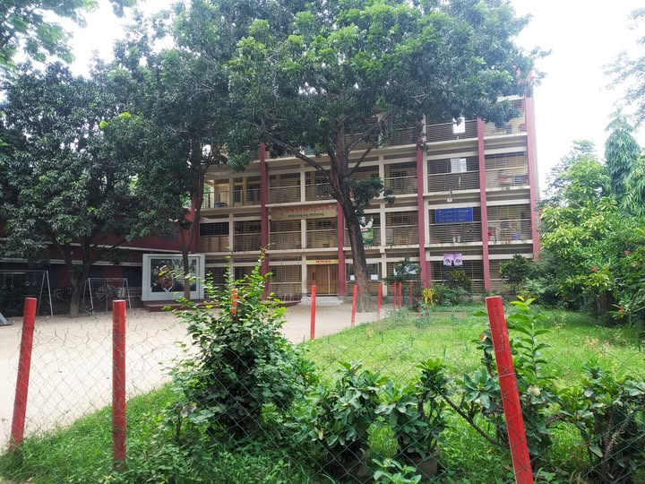
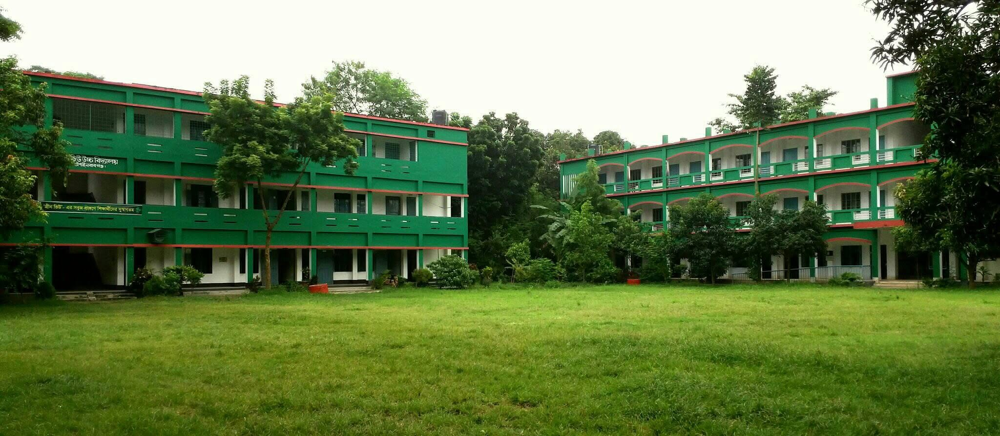

My school journey has been an important part of my life. From my early childhood education to my current high school years, every school has given me new experiences, knowledge, friendships, and memories.
My educational journey began at Renaissance Kindergarten, where I started my pre-primary education. It was the beginning of my school life, where I learned the basics, made my first friends, and created some of my earliest school memories. 🌱

I continued my primary education at Nawabganj Model Government High School. These years helped me grow academically and personally. I learned many new things, made good friends, participated in school activities, and created many memories that I still remember today. 😊

I am currently continuing my high school education at Collectorate Green View High School. This stage of my journey has brought new challenges, new friendships, and more opportunities to learn and improve myself. My teachers and friends have played an important role in making these years meaningful and memorable. 🚀
| Class | Institution | Year | Qualif. |
|---|---|---|---|
| Pre-School | Renesa Kinder Garden | Calc | |
| One | Nawabganj Model GOVT. Primary School |
2019 | A+ |
| Two | Nawabganj Model GOVT. Primary School |
2020 | A+ |
| Three | Nawabganj Model GOVT. Primary School |
2021 | A+ |
| Four | Nawabganj Model GOVT. Primary School |
2022 | A+ |
| Five | Nawabganj Model GOVT. Primary School |
2023 | A+ |
| Six | Green View High School | 2024 | A+ |
| Seven | Green View High School | 2025 | A+ |
| Eight | Green View High School | 2026 | On going |